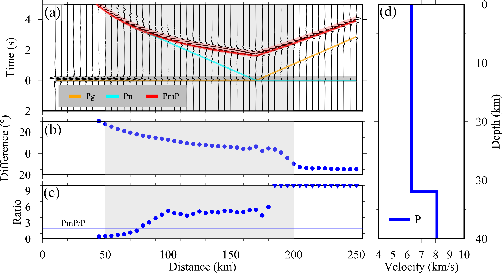
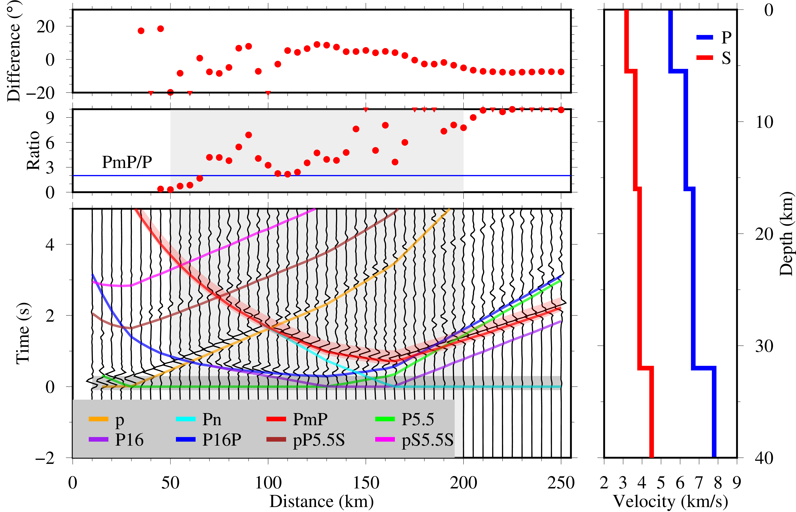

Synthetic Perspective
Synthetic waveforms generated by an explosive source at 3 km depth in an one-layer crust model:
{kind=link}

In the figure, the synthetic vertical-component waveforms (filtered between 1-7 Hz) are shown (a), and they’re computed in the one-layer crust model (d) by using the frequency-wavenumber (FK) synthetic seismogram package (Zhu & Rivera, 2002).
We observe minor differences between the apparent incident angles of the P and PmP waves (b) for each synthetic trace. And the amplitude ratio between the PmP and P waves (c) is larger than 2.0 in most cases for each synthetic trace. Note that the ratio values greater than 10.0 are plotted as inverted triangles.
Synthetic waveforms generated by an explosive source at 3 km depth in an multi-layer crust model:
{kind=link}

In the figure, the synthetic vertical-component waveforms (filtered between 1-7 Hz), and they’re computed in the multi-layer crust model by using the frequency-wavenumber (FK) synthetic seismogram package. Here, using the Taup (Crotwell et al., 1999) package, we recognize eight main phases. Specifically, we use P5.5 and P16 to denote the refracted waves along the intra-crustal interfaces, e.g., PmP5.5 and PmP16 denote the reflected waves along the intra-crustal interfaces.